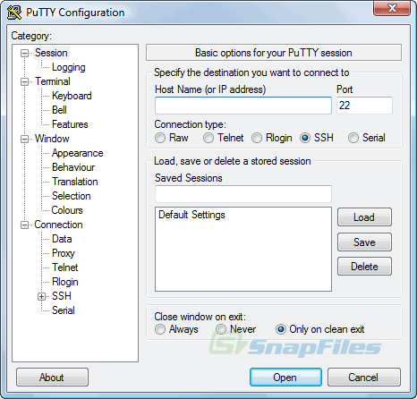

HPC Access
National Computational Infrastructure
NCI is a research-focused organization that provides advanced computing, data storage, and data management solutions to support scientific research and innovation in Australia and beyond. NCI’s HPC systems are designed to handle complex computational tasks, such as simulations, data analysis, and modeling, for a wide range of scientific disciplines, including climate modeling, genomics, astronomy, and materials science.
Resources
Setting up your NCI Account
All new users must create their account through the NCI online self service portal.
To create your account you will need the following information:
Your Name
Institutional email address (Gmail, Hotmail, etc are not accepted)
Mobile phone number (optional, but strongly encouraged as you otherwise won’t be able to easily reset your password)
Either:
NCI project code of an existing project you wish to join
A new project proposal to be assessed by a Scheme Manager to determine if they will grant your project time
Note that resources at NCI are allocated to projects and not to individual users.

Complete all steps in the registration form.


Your username will become active when a project Lead CI approves your request to join their project, or when a Scheme Manager approves your new project proposal. You will receive a confirmation email from the Mancini system when your username is activated.
How to log into Gadi
Linux/Mac/Unix
Access to Gadi is via SSH to gadi.nci.org.au. This provides a Unix shell on one of the Gadi login nodes.

Copying Files
To copy files to Gadi you should use the Gadi data movers gadi-dm.nci.org.au:

X11 (X-Windows)

Copying Files
We recommend the use of one of the following packages for X11 access to Gadi:
MobaXterm from http://mobaxterm.mobatek.net
Cygwin from https://cygwin.com
Xming from http://www.straightrunning.com/XmingNotes/
Windows


Copying Files
To copy files to Gadi you should use the Gadi data movers gadi-dm.nci.org.au:
We recommend the following applications to copy files to and from Gadi:
MobaXterm from http://mobaxterm.mobatek.net
PuTTY’s PSCP or PSFTP applications from http://www.chiark.greenend.org.uk/~sgtatham/putty/
FileZilla from https://filezilla-project.org
WinSCP from https://winscp.net/
To transfer files/folders using MobaXterm on Windows system, drag and drop files/folders to/from local computer and Gadi after log in to Gadi via MobaXterm.
All materials copyright Sydney Informatics Hub, University of Sydney